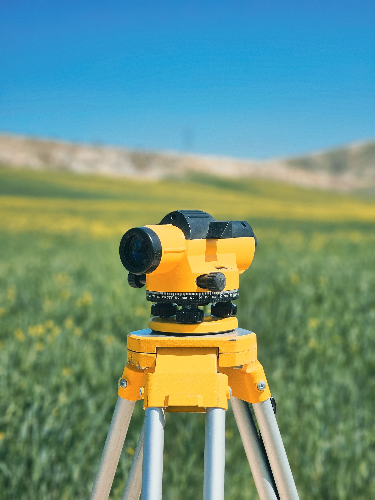

The anomalies were the fence
The brief
A geophysics contractor had surveyed a brownfield plot ahead of UXO clearance and produced a map carrying 214 flagged anomalies — an impossible dig list, roughly triple what the plot's history justified. They suspected their new OPM array. They asked for the array to be fault-found.
The decisions
The array was bench-tested first and passed its calibration whole. So the survey was re-run as a baseline exercise: 72 hours of logging before any re-mapping, the plot walked on a 5 m grid, and every linear feature on the anomaly map laid against the site's own drawings. Three sources accounted for the pattern: a buried services cable crossing the plot diagonally, the steel fence line on the northern boundary, and the site generator, whose contribution rose and fell with its load. The array had been measuring the site's own infrastructure, faithfully, at high resolution.
The outcome
A corrected baseline map with the three infrastructure signatures modelled and removed, and a dig list of 37 anomalies — the ones that survived subtraction. The array needed no repair and was not replaced. The contractor's report to their own client said, in print, that the first map had been photographing the fence. The fee was the survey fee, unchanged: the conclusion never moves the price.
“Brandt's report told us our expensive new map was photographing our own fence. It also told us exactly which 37 anomalies were real. That is the only kind of honesty worth paying a day rate for.”
